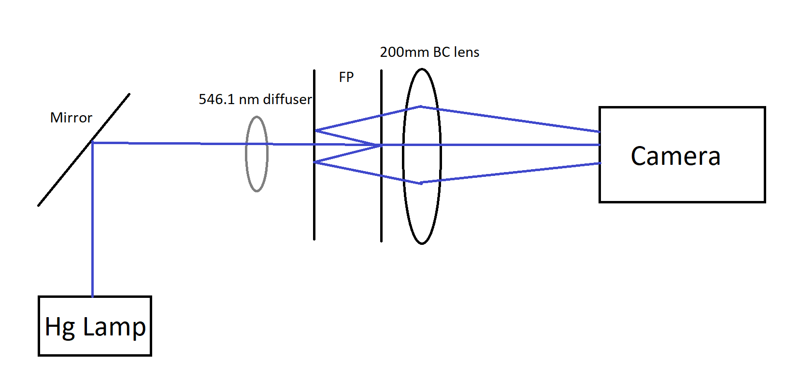

Abstract
The Fabry-Perot interferometer is commonly used in modern optical science. I measured the diameter of the ring pattern and fit the plate spacing of the Fabry-Perot. Using these values I estimated the actual finesse of the Fabry-Perot and perform a precise wavelength measurement of the mercury lamp. My result shows that the wavelength of mercury spectral lines is very close to the previous experimental value.
Introduction
In the late 19th century, Alfred Perot and Charles Fabry, two French physicists at the Univerisity of Marseilles, described a novel form of interference device. They set up two reflected plates that were accurately parallel and input a wave such as light between the two plates. Then they observe an interesting phenomenon [1]. This is the earliest version of the optical device now called the Fabry-Perot interferometer.
The Fabry-Perot is one of the most commonly used ``multiple-beam'' interferometers. It has found many applications, such as the measurement of refractive indices of gases, measurement of lengths, hyperfine structure wavelength, etc [2]. A Fabry-Perot interferometer consists of two mirrors or quartz plates. The inner faces of the plates are coated with highly reflecting metal or dielectric films with a very precise plate distance, forming an assembly referred to sometimes as an etalon [3]. When a light wave enters the device, it reflects back and forth between plates many times, creating a multiple-line light ray output. See Fig. 1. By using a lens, the Fabry-Perot can form an interesting ring pattern, which is mostly used in high-resolution spectroscopy.
I report here on the measurement of the diameter of these rings and use these values to do a close wavelength measurement. The fitting data of plate spacing was used to calculate the upper bound of finesse and estimate the actual finesse. With plate spacing and finesse values, I can use the Fabry-Perot to perform a precise hyperfine structure measurement of the mercury lamp and compare the result with previous experimental outcomes [4]. The result of wavelength measurement was very close to previous experiments. It shows a precise wavelength measurement of mercury spectral lines.
Theory and Experiment
In the plates, an incident wave is reflected back and forth between two plates and split into a series of many waves that interfere at infinity. By using a converging lens, the Fabry-Perot interferometer can form a circular pattern at the focal point of the lens. See Fig. 2. For mercury lamps, every closely spaced wavelength light will create different patterns which have a small space between each circle. By analyzing the circular patterns, the diameters of different wavelengths of light can be used to estimate precisely the difference between very closed wavelengths because of high resolution. Thus, the Fabry-Perot interferometer is one of the most powerful instruments in modern optics.
In this experiment, my focus is to measure basic parameters that characterize the Fabry-Perot interferometer, in order to make a precision wavelength measurement of the mercury spectrum. First, I used a Helium-neon laser as light input for the Fabry-Perot, then by putting a 100 mm BC (BC lens means both sides of the lens are curved) lens at the output and located the FLIR camera at the focal point of the lens to collect the circular pattern image. The diameter of the p-th ring is given by
$$D_{p} = 2f\sqrt{\frac{\lambda}{d}\left(p - 1 + \epsilon \right)} \ \textbf{.} \label{eq:1}$$
I can estimate a value for plate spacing d and offset value epsilon. Next, I estimate a d value, by using θ from Fig. 1. I can determine the actual finesse F of the Fabry-Perot by using this normalized intensity equation
$$\frac{I(x)}{I_\textrm{max}} = \frac{1}{1 + F\sin{\frac{\delta}{2}}^2}\ \textbf{,} \label{eq:2}$$
where $$\delta = 2dk\cos{\theta} \textbf{,}$$ $$k = \frac{2\pi}{\lambda} \textbf{.}$$ The value of F will have an upper bound due to the reflectance of the plate. Assume the reflectance is R, every time when the light hit one side of the plate, the intensity decreased by a factor of R. For a round trip, the intensity decreased by a factor of R^2. If there is no lens to create rings, the Fabry-Perot interferometer will produce a multiple-light-ray output, sometimes known as a ``string of beads''. From the intensity data of the beads, I can calculate an approximate value for R and use the value to find the upper bound finesse. Then I compared the upper bound value with actual finesse.
After all basic parameter approximation, using these values, I can perform precise wavelength measurements. I put a mercury lamp beside the optical rail and use a mirror to reflect the light into the rail. Then observe the ring pattern from each hyperfine structure energy state. An atom with spin will have different energy states. In my case, a mercury lamp light source is made from a mixture of several isotopes. Some of these isotopes such as 199 and 201 have a 1/2 spin that produces a magnetic field which can influence the atomic energy levels. Each level will release energy in the form of photons. Different energies level produce different wavelength light waves. Going through the Fabry-Perot interferometer will create several dim spectrum circles around the main bright energy circle. The condition for constructive interference[4]:
$$2d\cos{\theta_{m}} = m\lambda\ \textbf{,} \label{eq:3}$$
where m stands for the order of rings. Here since θm is a small angle, then $$m \approx \frac{2d}{\lambda}\textbf{.}$$ By using trigonometry and small-angle approximation for cos θm, I can rewrite the above equation into
$$2d\left(1 - \frac{1}{2}\left(\frac{\Delta x}{f}\right)^2\right)= \Delta\lambda \ \textbf{,}$$
where f is the focal length of the lens, ∆x is the distance differences between spectral lines and first order circle. Since the wavelength of the mercury standard spectral line is λ = 546.1 nm, I can calculate the wavelength for spectral lines by using ∆λ = λ(Spectral) − λ. For a good approximation of wavelength difference
$$\lambda_{\textrm{1}} - \lambda_{\textrm{2}} = \left(\frac{\lambda^2}{2d}\right)\left(\frac{\left(D_{m,2}\right)^2 - \left(D_{m,1}\right)^2 }{\left(D_{m,1}\right)^2 - \left(D_{m+1,1}\right)^2}\right)\ \textbf{,}$$
where Dm,2 is the diameter of the m-th order ring which created by wavelength λ2, Dm,1 is the diameter of the m-th order ring which created by wavelength λ1 and Dm+1,1 is the dia meter of the (m + 1)-th order ring which created by wavelength λ1.To estimate d, I put the He-Ne Laser at one end of an optical rail, then put two diffusers in front of the interferometer, one of them is fixed, and the other one need to be gently shaken during the observation process. Next, put a 100 mm convex lens at the back of the interferometer. Finally, locate the camera(FLIR Blackfly) at the focal point(100 mm) of the lens. From the camera software, I collect a clear image of the ring pattern. This image will be used for estimating d and F. I used the line tool in ImageJ software to create a line from the center to the farthest visible ring. Then plot the intensity vs position and take the data.
Analysis and Result
By fitting Eq. (1). I can get an approximate value for plate spacing. See Fig. 5. The result of plate spacing are d = 3.01 ± 0.01mm and epsilon = 0.63 ± 0.02. Where epsilon should be in the range of 0 and 1 as expected. The result for epsilon is appropriate. The fitting d value can be changed every time when I adjust the screws on the interferometer. For consistency, I use the data from the time at which I estimate the actual finesse. The χ2 = 3.55 with a degree of freedom ν = 4, the significance of 0.47 which shows the fitting result of data points and the expected data from Eq. (1) are acceptable.
From Fig.~\ref{fg:sob.png}, the intensity plot of ``string of beam'', I choose peaks from each beam and fit a curved line of R^{2n}, where n is the number of round trips. The fitting result is R = 0.98119 ± 0.00001 with χ2 = 2.0 and ν = 3. The significance is 0.567, which means that the fit is acceptable. The coefficient of finesse F is $$\frac{4R}{(1-R)^2} \textbf{.}$$ By using: $$F_{\textrm{max}} = \frac{\pi}{2}\sqrt{F}$$
This formula gives the upper bound value of finesse. When fitting the actual finesse value, the fitting result can't be larger than this. The calculation value of Fmax is 165.4 ± 23.9.

By using ImageJ, and line tools, I collect several intensity vs position data. The unit for the position is a pixel, I convert it into meters. From Fig. 7, we can see that the relation between the radius of the ring and angle is $$\tan\theta = \frac{x}{f} \ \text{.}$$
From this equation, I calculate the value for θ by using distance and focal length in meters. Putting the θ values into Eq. (2), compare it with real values, set up an initial guess for F = 20 and fit. See Fig. 8. The result is F = 28.12 ± 0.92 with χ2 = 1031.0 and ν = 1029. The significance is 0.477, which is greater than 0.05, which means I accept the null hypothesis. There is no significant difference exists between the model and the data. From Eq. (2), we can see that there is no decreasing term, the max value for each peak is the same. However, in the real world, the peak intensities are not always constant due to reasons such as vignetting. Normally, a residual with a pattern is not acceptable, but not in this case.
There are a lot of applications that the Fabry-Perot interferometer can do, one of them is measuring the wavelength of a mixture of light such as a mercury lamp. I change the laser to a mercury lamp in the setup. I place the mercury lamp beside the optical rail and use a mirror to reflect the light into a 546.1 nm diffuser. This diffuser will block light whose wavelength is 546.1 nm in order to only show the ring pattern of the mercury spectral line. The whole setup is in Fig. 9. Then the light goes into the Fabry-Perot interferometer and makes a ring pattern from a 200 mm BC lens. In order to increase the overall intensity, I put the mirror and lens very close to the Fabry-Perot interferometer. After changing some exposures and gain values in the software, Fig. 10 shows the hyperfine structure of the mercury line.

By using Eq. (5), this formula gives a wavelength shift between two different energy levels. In my expectation, the most common isotopes which can produce spins and magnetic fields are mercury 199 and mercury 201. The former one has a nuclear spin of 1 2 and the latter one has a nuclear spin of 3/2 . The absolute wavelength is around 546.1 nm for all the lines. See Fig 11. I measure the distance between two inner lines and two outer lines. The diameter for m-th order(The brighter inner ring) is 654.941 pixels. Converting to the meter is 0.00226 m. The diamter for (m + 1)-th ring is 0.00254 m. The from inside to outside for spectrum are −150.21, −87.82, 59.135, 80.231. Plugin to the Eq. (5). I get four values with tiny differences for a wavelength shift. See table I. The outcome shows the Fabry-Perot interferometer can be used in precise wavelength differences measurements. Compare to other optical devices such as grating and prim, the Fabry-Perot interferometer can measure wavelength differences of about fourteen digits.
| Unit: 10−11 m | Inner 1 | Inner 2 | Outer 1 | Outer 2 |
|---|---|---|---|---|
| ∆λ | -4.860825251728679 | -4.8608252517196604 | -4.8608252516942646 | -4.860825251690141 |
As we can see, the value of plate space and reflectance can be estimated from the output images. Using the d value, I can estimate a value for actual finesse. Even though the function doesn't fit the data will, it is still reasonable. The Fabry-Perot interferometer can be used to perform a precise wavelength measurement. The light reflects between the plate back and forth to create a high-resolution image. Thus, this interferometer is well-compatible with high-resolution spectroscopy applications.
References
- [1] Vaughan, M. (1989). The Fabry-Perot Interferometer: History, Theory, Practice and Applications. New York, NY: Taylor Francis Group, p. 1–40
- [2] Melissinos, A. C. (1966). Experiments in Modern Physics. New York: Academic Press, p. 309
- [3] Melissinos, A. C. (2003). Experiments in Modern Physics, 2nd ed. New York: Academic Press, p. 172
- [4] Melissinos, A. C. (1966). Experiments in Modern Physics. New York: Academic Press, p .310